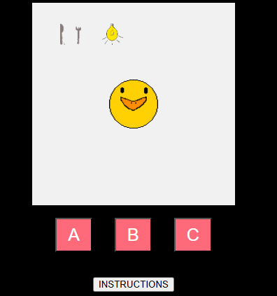

My name is Chibueze Ego-Osuala, but you can call me CE-0 (Cee-Row). Welcome to my humble abode.
My latest project was Grave Danger, a game developed in Godot for the itch.io Pixel Game Jam. You can find more info about it here.

Currently, I am working on CyberPet, a web-based pet simulation game developed using JavaScript and HTML in which the player gets to take care of a virtual pet.
